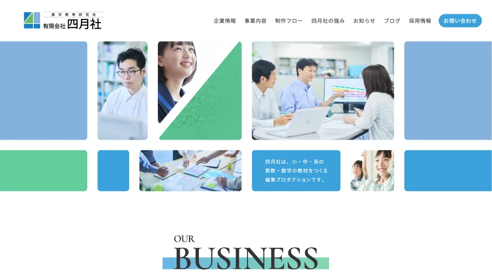
RECRUIT SITE / WordPress
PORT
FOLIO
KATSUYA HYODO — Web Designer

RECRUIT SITE / WordPress
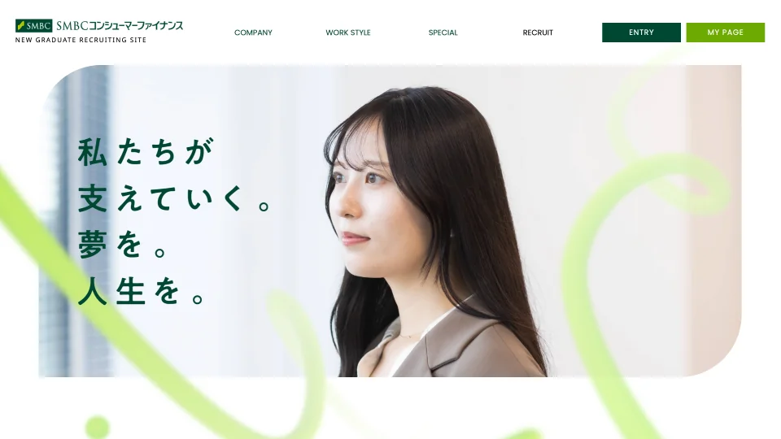
RECRUIT SITE
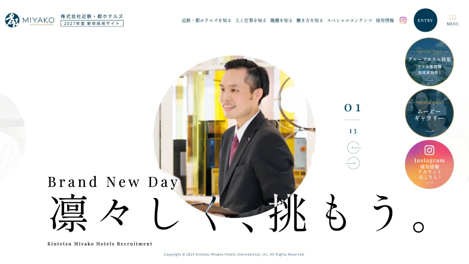
RECRUIT SITE / WordPress
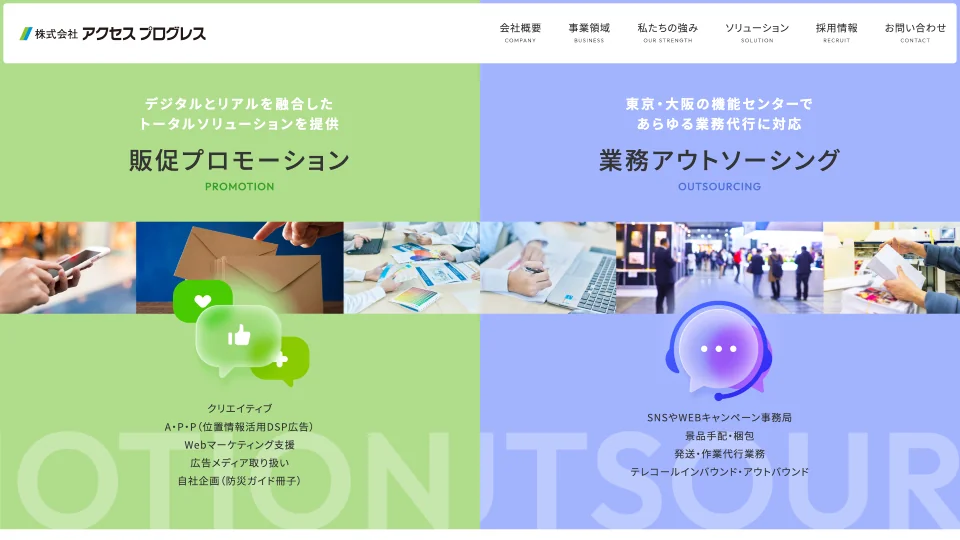
CORPORATE SITE / WordPress
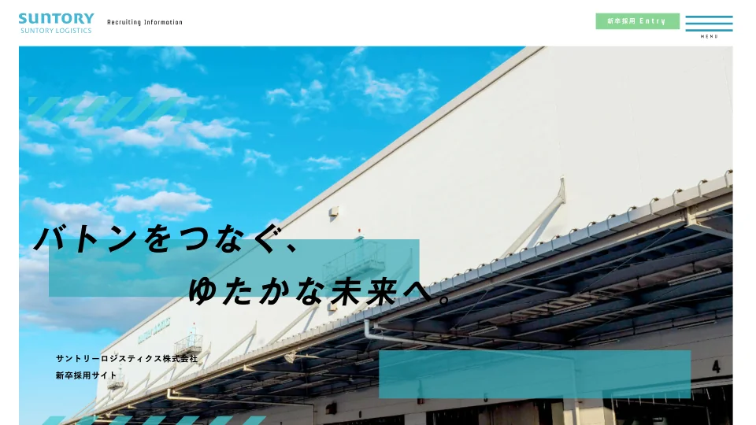
RECRUIT SITE
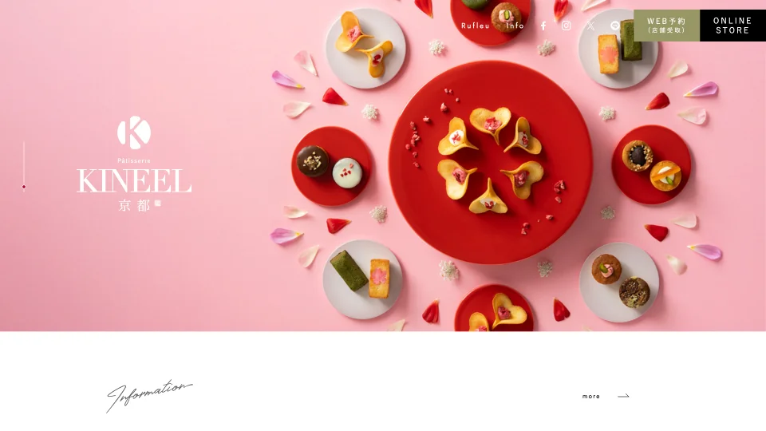
OFFICIAL SITE & ONLINE SHOP / futureshop / WordPress
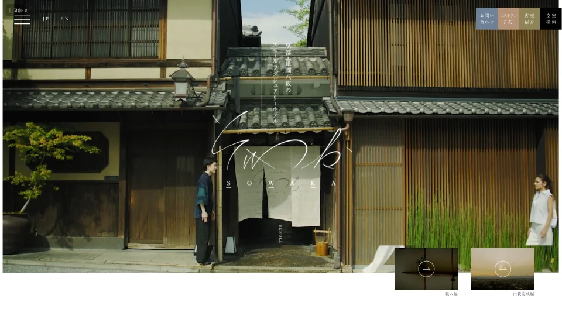
OFFICIAL SITE / WordPress
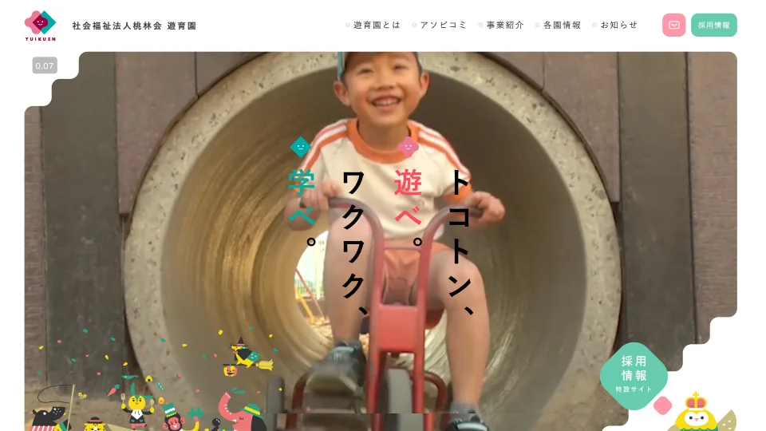
OFFICIAL SITE / WordPress
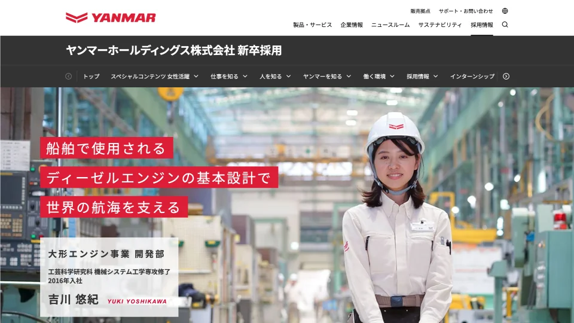
RECRUIT SITE
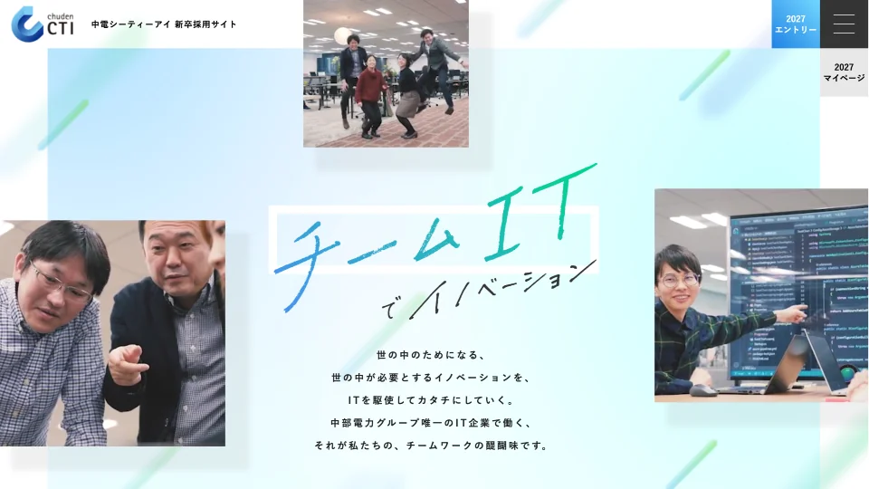
RECRUIT SITE
RECRUIT SITE
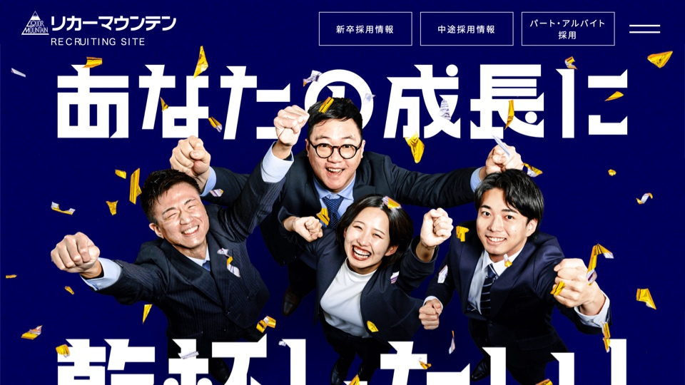
RECRUIT SITE
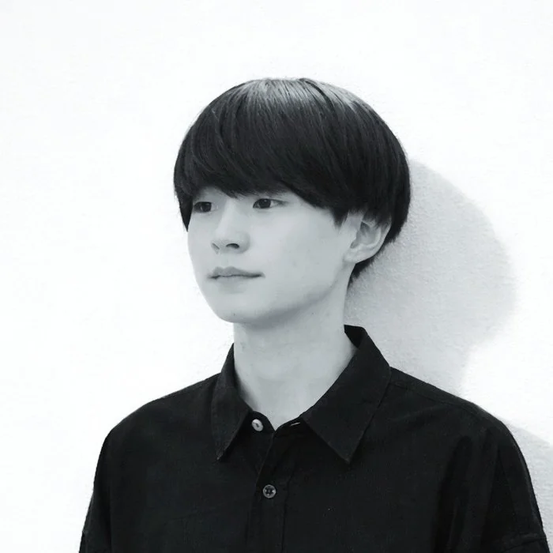
KATSUYA HYODO
兵頭 克弥
愛媛県出身。大学卒業後は不動産会社にて新規顧客開拓に従事しました。その後、自分の興味や適性を見つめ直し、以前から関心のあったWebデザインの分野に挑戦することを決意しました。職業訓練校でHTML・CSSを学び、デザイン会社に入社しました。約8年間、Webデザイナーとして主にWebサイト制作に携わり、ヒアリング・要件整理・構成設計・見積もり・進行管理から、デザイン・コーディング、公開後の運用まで一貫して担当してきました。デザインと実装の両方を経験しているため、実装や運用を見据えた設計ができることが強みです。退職を機に岡山県で働きたいと考え、これまでの経験を活かしながら、地域で長くWeb制作に携わっていきたいと考えています。
SKILLS
デザイン： Illustrator / Photoshop / XD
コーディング： HTML / CSS / JavaScript / jQuery
CMS： WordPress / Movabletype / HeartCore
EC： futureshop / EC CUBE / Rakuten
連絡・管理： Slack / ChatWork / Backlog